基础
OSI七层模型和TCP/IP协议
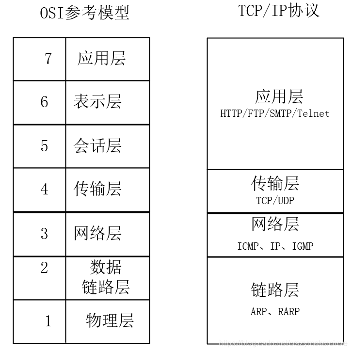
TCP/IP协议-应用层
应用层包括所有和应用程序协同工作，并利用基础网络进行业务数据交换的协议。该层协议所提供的服务能直接支持用户应用。
协议包括：
- HTTP（万维网服务-超文本传输协议）
- FTP（文件传输）
- SMTP（电子邮件）
- SSH（安全远程登陆）
- DNS（域名解析）
- 等等…
TCP/IP协议-传输层
传输层协议，解决了端对端进程通讯问题，能确保数据可靠的到达目的地。
主要功能：
- 端对端连接提供传输服务
- 传输服务分为可靠（TCP）和不可靠（UDP）
- 为端对端连接，提供流量控制、差值控制等管理服务
TCP传输控制协议和UDP用户数据报协议
- TCP：面向连接的、可靠的传输协议，提供可靠的字节流，确保数据完整、无损并按顺序到达，TCP尽量连续不断的测试网络负载，并指发送数据的速度，以确保不会网络过载。TCP试图按照规定顺序发送。
- UDP：无连接的数据报协议，是尽力传输和不可靠协议，不会对数据是否已经到达进行检查，也不保证数据报按顺序到达。
TCP传输效率低，可靠；UPD传输效率高，不可靠，适用于传输可靠性要求不高、体量小的数据（QQ聊天数据）
TCP/IP协议-网络层
为要发送的数据找到一个合适的路径传输。还可实现拥堵控制，网际互连等。
协议有：
- ICMP
- IP
- IGMP
- 等等…
TCP/IP协议-链路层
也称数据链路层，用来处理连接网络的硬件部分。包括操作系统硬件的设备驱动、NIC（网卡）、光纤等物理可见部分，还包括连接器等一切传输媒介。
在这一层，数据的传输单位为比特。
主要协议：
- ARP
- RARP
- 等…
HTTP报文传输
原理
利用TCP/IP进行网络通信时，数据包会按照分层顺序与对方进行通信。发送端从应用层往下走，接收端从链路层往上走。从客户端到服务器的数据，每一帧数据的传输的顺序都为：应用层->传输层->网络层->链路层->链路层->网络层->传输层->应用层
过程
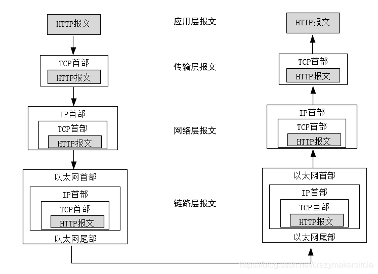
数据的封装和分用
数据通过互联网传输，需要加上特定的标识，加标识的过程叫做数据的封装。使用数据的时候去掉标识，这个过程叫分用。
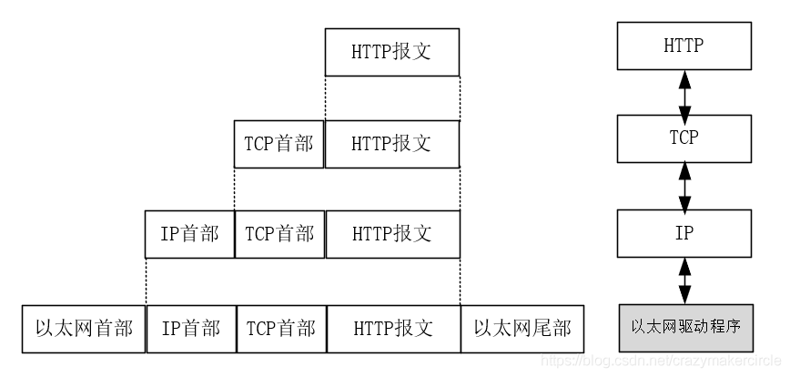
在传输过程中，数据报文会在不同的物理网络之间传递。以一个HTTP请求的传输为例，请求在不同物理网络之间的传输过程，大致如下图所示：
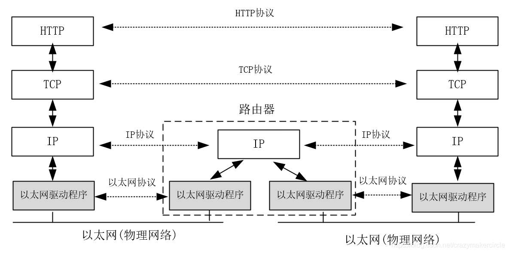
数据传输和交换的方式
数据传输方式
按数据传输的流向和时间关系分类
- 单工通信：数据沿一个方向传输，发送和接收方固定。类比广播。
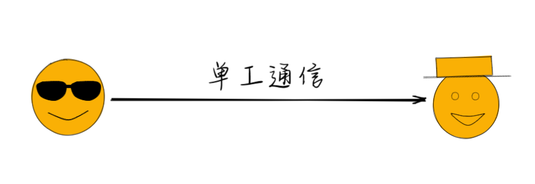
- 半双工通信：可以双向传输，但是不能同时进行。类比对讲机。
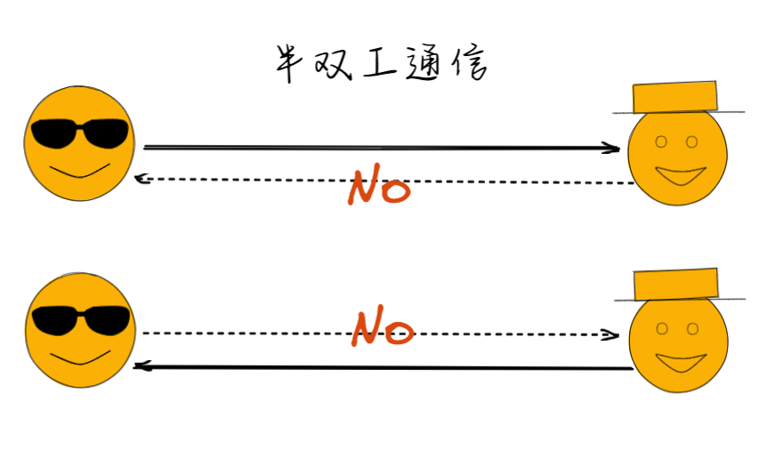
- 全双工通信：可以双向传输，可以同时进行。类比打电话。
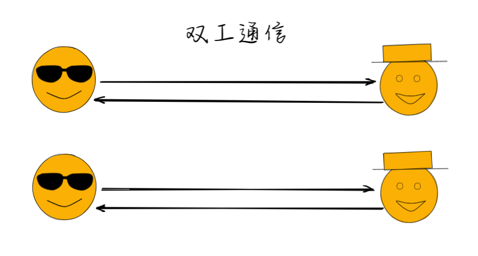
按数据传输的顺序分类
- 串行传输：以串行方式在一条信道传输，易于实现，缺于要解决同步问题。
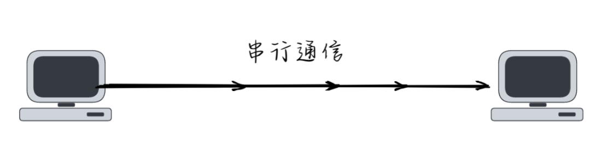
- 并行传输：在多条信道上并行传输，一条信道一个字符，天然实现同步。缺点传输信道多，设备复杂，成本高，一般不采用。
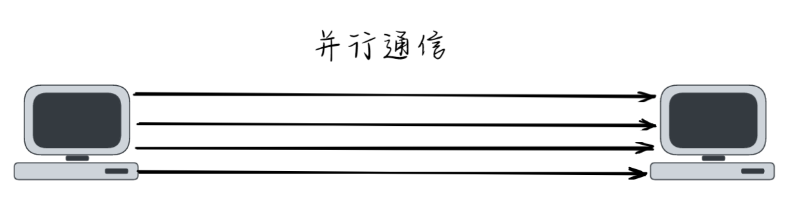
按数据传输的同步方式分类
- 同步传输：数据没有被对方确认接收就一直等待，确认了才返回。
- 异步传输：发送数据后立马返回，接收时，有数据，则接收方会收到消息。
数据交换方式
数据交换指在多个数据终端设备之间，为任意两个终端设备建立数据通信临时互连通路的过程。
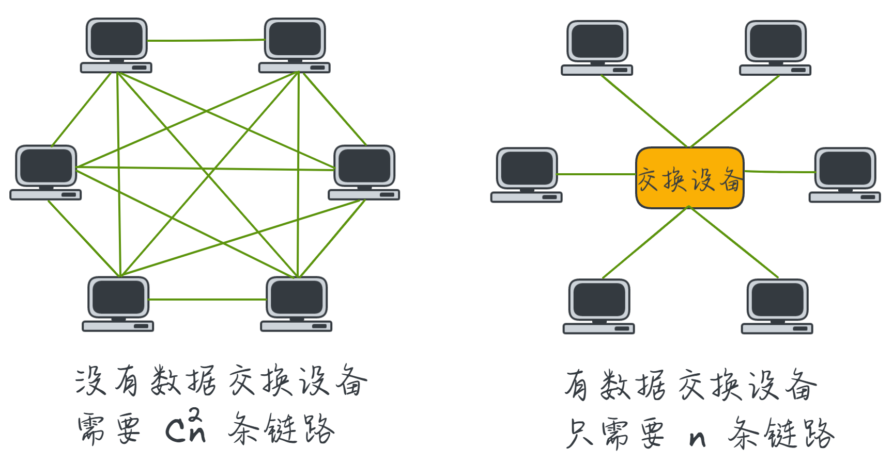
电路交换
用户之间要传输数据时，交换中心在用户之间建立一条暂时的数据电路。电路接通后，用户双方便可传输数据，并一直占用到传输完毕拆除电路为止。
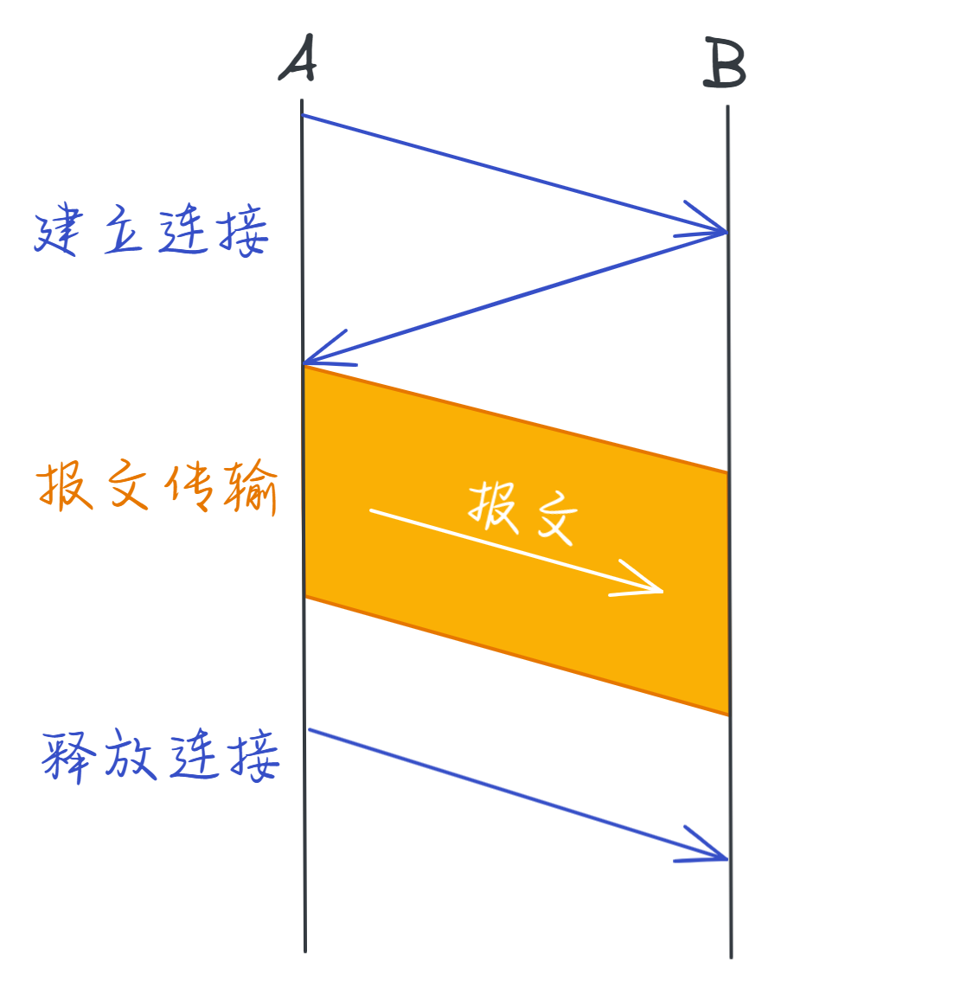
各层的作用
网络层本身没有数据传输功能，数据实际委托给数据链路层传输，网络层起指导作用，指导数据链路层该怎么走
物理层-集线器
无脑将电信号转发到所有出口，不做任何处理

A发送数据包时，只需在数据头部拼接源MAC地址和目的MAC地址。
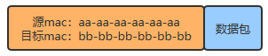
B收到数据包后，根据头部MAC地址信息判断是否是发给自己的。是则留下，不是则丢弃。

数据链路层-交换机
把集线器智能化，只发给目标MAC地址指向的电脑

交换机利用内部维护的MAC地址表，判断连接在哪个端口。实现只发给目标MAC地址指向的电脑。
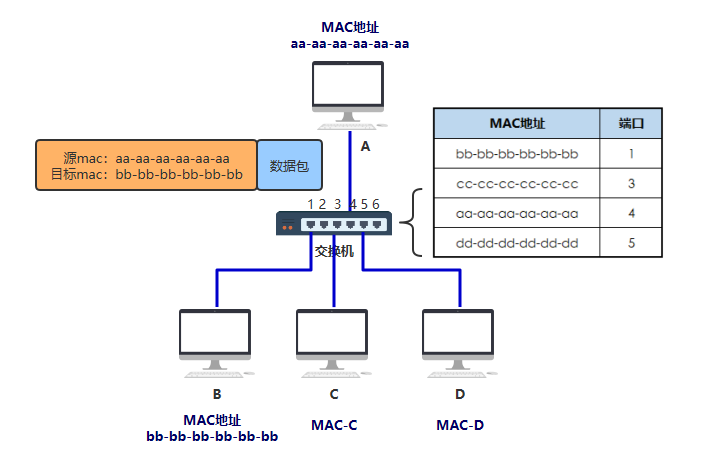
通过这样传输方式组成的小范围网络，称以太网
MAC地址在初始的时候是空的，通过网络中机器的不断通信，将MAC表建立完毕。

网络层-路由器
作为一台拥有独立MAC地址的设备，并且可以帮我们把数据包做一次转发。
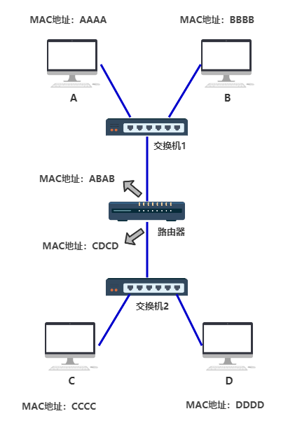
路由器的每个端口，都有独立的MAC地址。
通过IP地址和MAC地址来精准的发送给指定设备
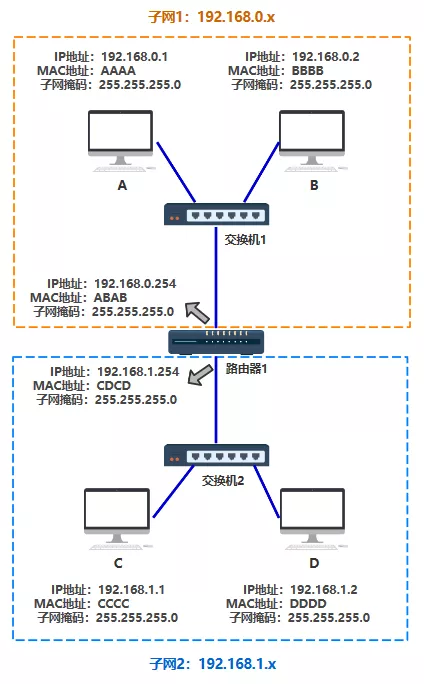
路由器需要知道收到的这个数据包，该从自己的哪个端口走，才能到目的地。——路由表
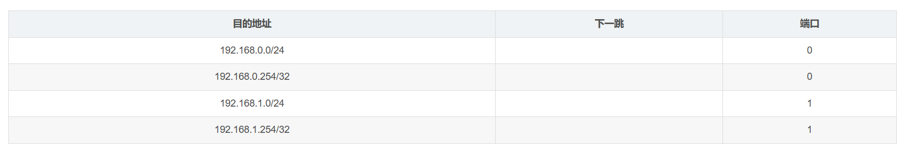

数据包
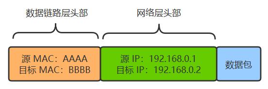
补充
上面说IP层需要IP地址，然后数据包发送需要数据链路层知道MAC地址。如果只知道IP怎么办？
在每个电脑里都有一个arp缓存表，记录着ip地址与MAC地址的关系
一开始表是空的，电脑A为了知道电脑B的MAC地址，将会广播一条arp请求，B收到请求，带上自己的MAC地址给A一个响应，A更新字的arp缓存表。
通过不断的广播arp请求，完善arp缓存表。
从各个节点视角看整个过程
电脑视角：
- 首先我要知道自己的IP和对方IP
- 通过子网掩码判断是否在同一子网
- 在则通过arp获取对方MAC地址，然后扔过去
- 不在则通过arp获取网关MAC地址，然后扔过去
交换机视角：
- 我收到的数据包必须有目标MAC地址
- 通过MAC地址查映射关系
- 查到了就按映射关系从我指定端口扔出去
- 查不到就向所有端口扔出去
路由器视角：
- 我收到的数据包必须有目标IP地址
- 通过路由表查映射关系
- 查到了就按映射关系从我指定的端口扔出去
- 查不到则返回一个路由不可达的数据包
数据链路层
什么是MAC地址
MAC地址称为链路地址、物理地址
由网络设备制造商生产时烧录在网卡的 EPROM（一种闪存芯片，通常可以通过程序擦写）
其中前 24 位（00-16-EA）代表网络硬件制造商的编号，后 24 位（AE-3C-40）是该厂家自己分配的，一般表示系列号。
一台主机拥有多少个网络适配器（网卡）就有多少个 MAC 地址。
网络层
IP协议
…
ARP地址解析协议
什么是ARP
ARP地址解析协议，实现IP地址到MAC地址的转换 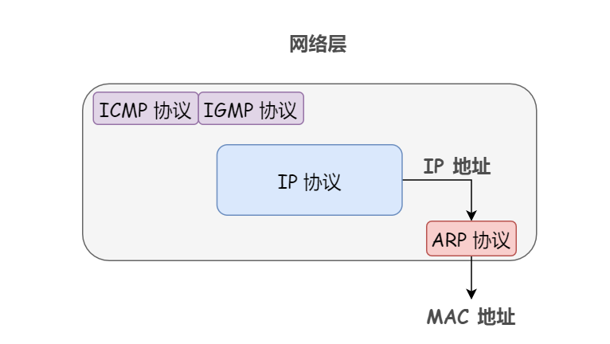
ARP工作原理
工作原理：借助ARP请求和ARP响应两种类型的包确定MAC地址。
每个主机都有一个ARP高速缓存，里面记录了本局域网下各主机和路由器的IP地址到MAC地址的映射表。
举例：
有主机A向局域网下主机B发送IP数据包，已知主机A和主机B的IP，他们互相不知道MAC地址。
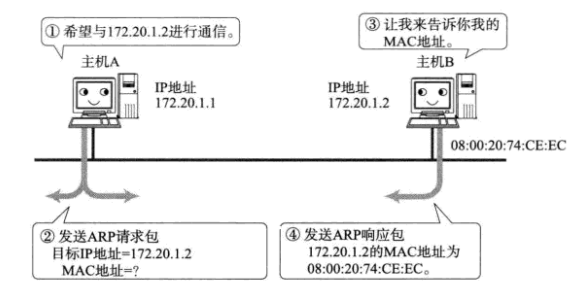
- 主机A查询自己的缓存里有没有主机B的MAC地址，有直接发送，无进入下一步
- 主机A把自己的IP地址MAC地址和目标的IP地址一起放在ARP请求包中，向局域网内所有主机广播
- 主机B收到ARP请求包，查看目标IP地址是自己，然后把自己的MAC地址放入ARP响应包，发送给主机A
- 主机A收到来自主机B的ARP响应包，向自己的ARP高速缓存中写入主机B的IP地址到MAC地址的映射
ICMP网际控制报文协议
什么是ICMP
IP协议是一种不可靠数据交付的网络协议，分组的IP地址，在传输过程中可能发生丢失、重复、延迟、乱序等情况，但是IP协议对这些情况并没有有效的检测和补救。更不会通知接收双方。
针对这种情况，ICMP网际控制报文协议，有两个功能。
- 对IP数据报确认是否成功送达目标
- 如果某个IP数据报因为某种原因未正常到达，由ICMP通知接收双方具体的原因。
ICMP工作原理
ICMP协议通过发送ICMP报文来通知具体的出错原因。
ICMP报文是由路由器发送。
举例：
如图，主机A和B不在同一局域网下，主机B在休眠。此时主机A向主机B发送数据包。
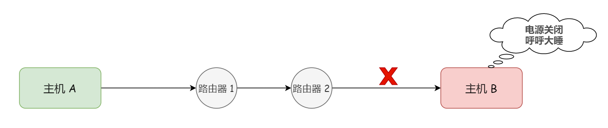
为了保持数据包的精准发送，我们要同时知道IP地址和MAC地址，路由器2广播ARP请求报文找主机B，多次广播后，无响应。
路由器发送ICMP报文给主机A，告知主机A发送给主机B的数据包未能成功到达。
ICMP报文类型
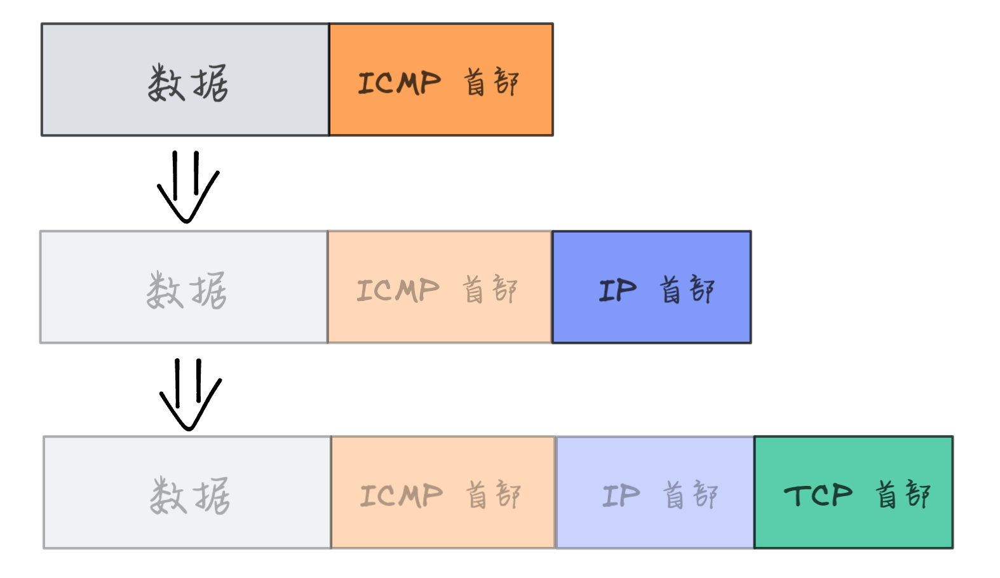
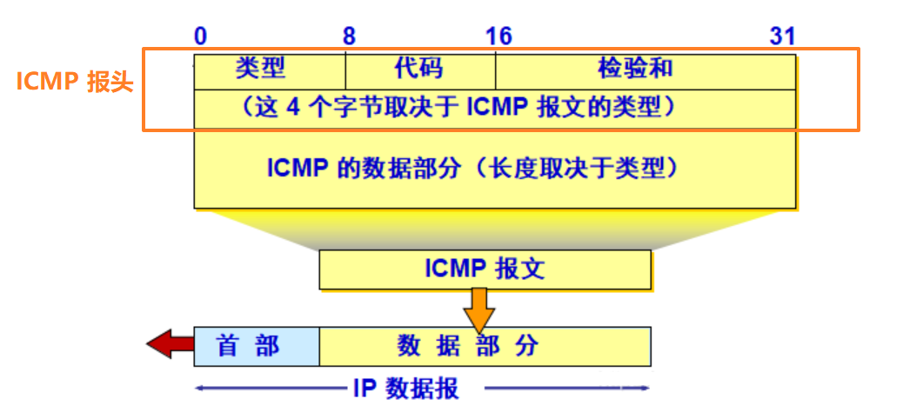
ICMP报文类型由ICMP头部4位的字段类型决定，分为
- 查询报文
- 差错报文